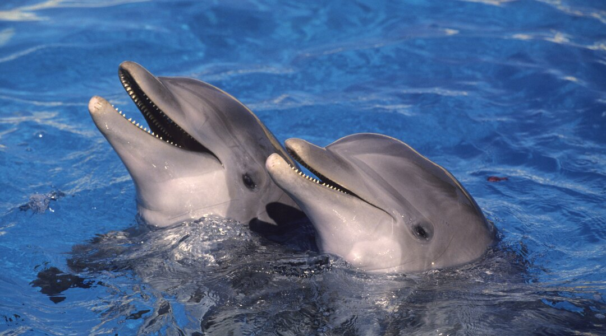
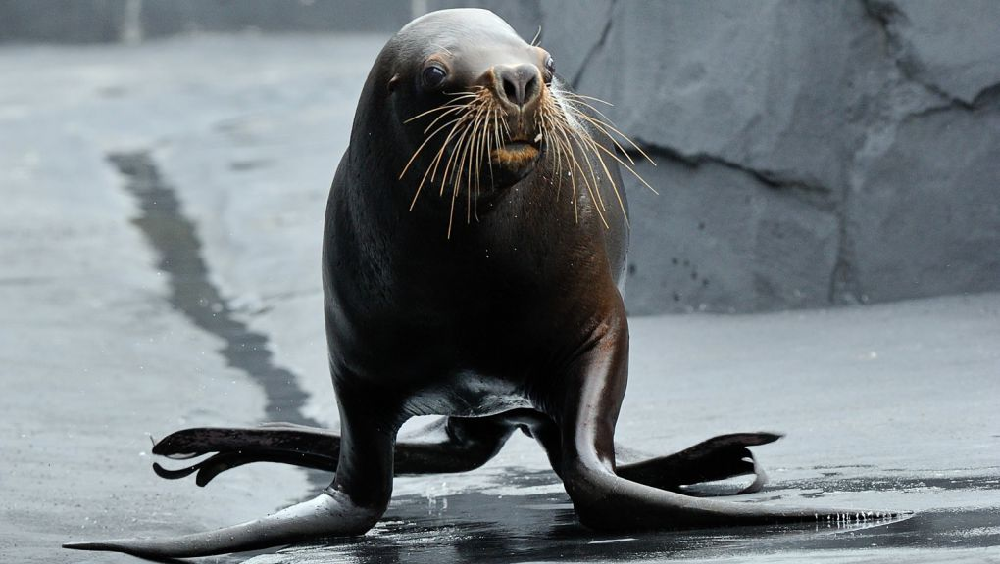

Marine Animals
Animals of the category
-
 Penguins
Penguins
Penguins are seabirds adapted to life in Antarctica, sub-Antarctic regions, and along the coasts of the Southern Hemisphere. They are distinguished by their black and white plumage, their wings transformed into fins and their exceptional diving abilities.
-

Dolphins
Dolphins are marine mammals found in oceans around the world. They are known for their intelligence, social behavior and spectacular leaps out of the water.
-

Maned sea lions
Maned sea lions are marine mammals found primarily on the west coast of South America, from Peru to Chile. They get their name because of the mane of hair that surrounds the males' necks.